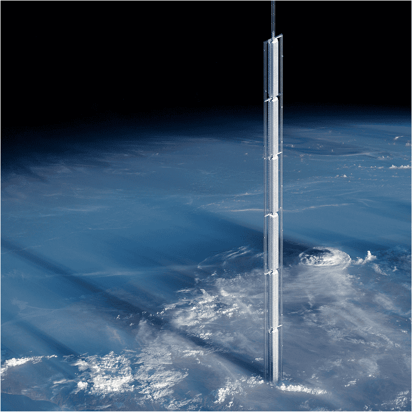
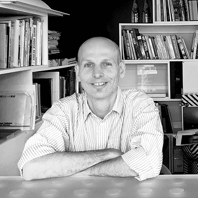

01. ABOUT THIS TOWER
아날레마 타워는 무엇일까?

NASA가 추진 중인 화성 계획과 더불어,
뉴욕의 건축 회사 Clouds AO는 상상 속에서나
가능할 것 같던 건축 아이디어를 내놓았습니다.
뉴욕의 건축 회사 Clouds AO는 상상 속에서나
가능할 것 같던 건축 아이디어를 내놓았습니다.

이들은 ‘소행성에 건물을 매단다’ 는 전례 없는 방식으로
지구 궤도를 도는 초고층 건물 ‘아날레마 타워(Analemma Tower)’를
제안했는데요,
만약 이 건물이 실현된다면 전 세계에서 가장 높은
건축물이자,
인류 최초의 ‘하늘에 매달린 도시’가 되는 셈입니다.
OSTAP RUDAKEVYCH

설계자 오스타프 루다케비치,
“건축이 인류를 재난에서 해방시킬 수 있다.”